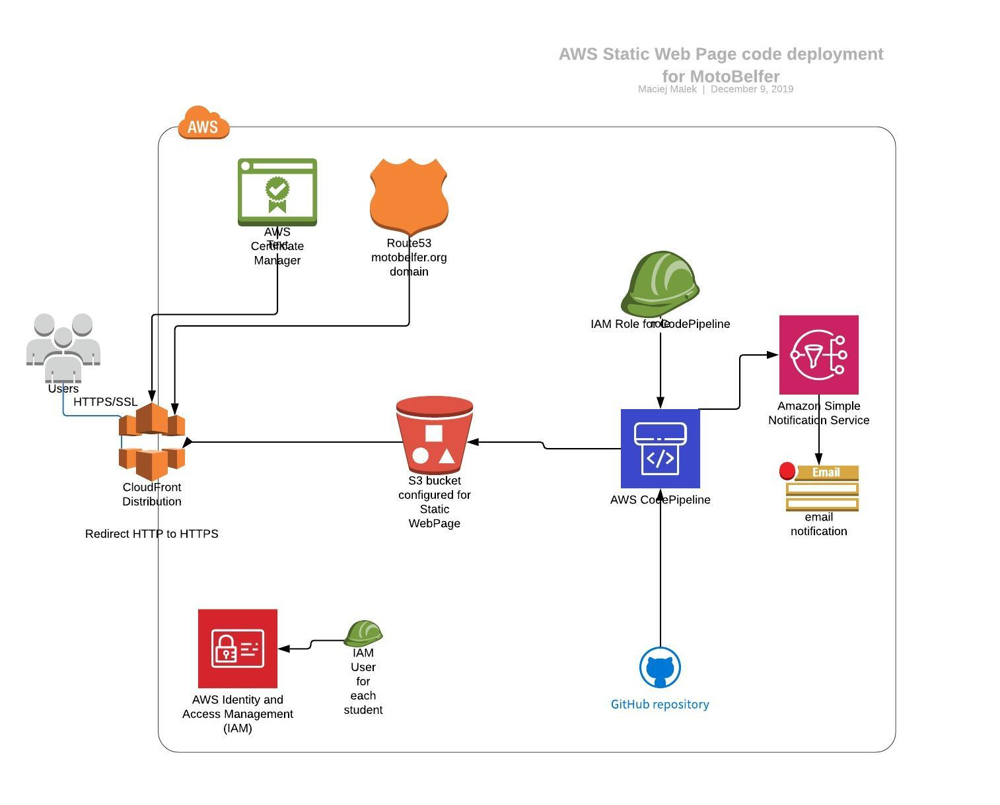

Cel kursu
Celem kursu jest zapoznanie uczestnikow z podstawowymi uslugami dostepnymi w chmurze AWS.
Uczestnicy zapoznaja sie z kilkoma serwisami z nastepujacych obszarow:
- Compute
- EC2
- Storage
- S3
- Networking & Content Delivery
- VPC
- Route 53
- CloudFront
- Developer Tools
- CodePipeline
- CodeDeploy
- Security, Identity, & Compliance
- Certificate Manager
- Application Integration
- AWS Budgets
- AWS Cost Explorer
W ramach zajec przygotuja samodzielnie statyczna strone www oraz system do automatycznej aktualizacji kodu z repozytorium Git znajdujacego sie w serwisie GitHub.
